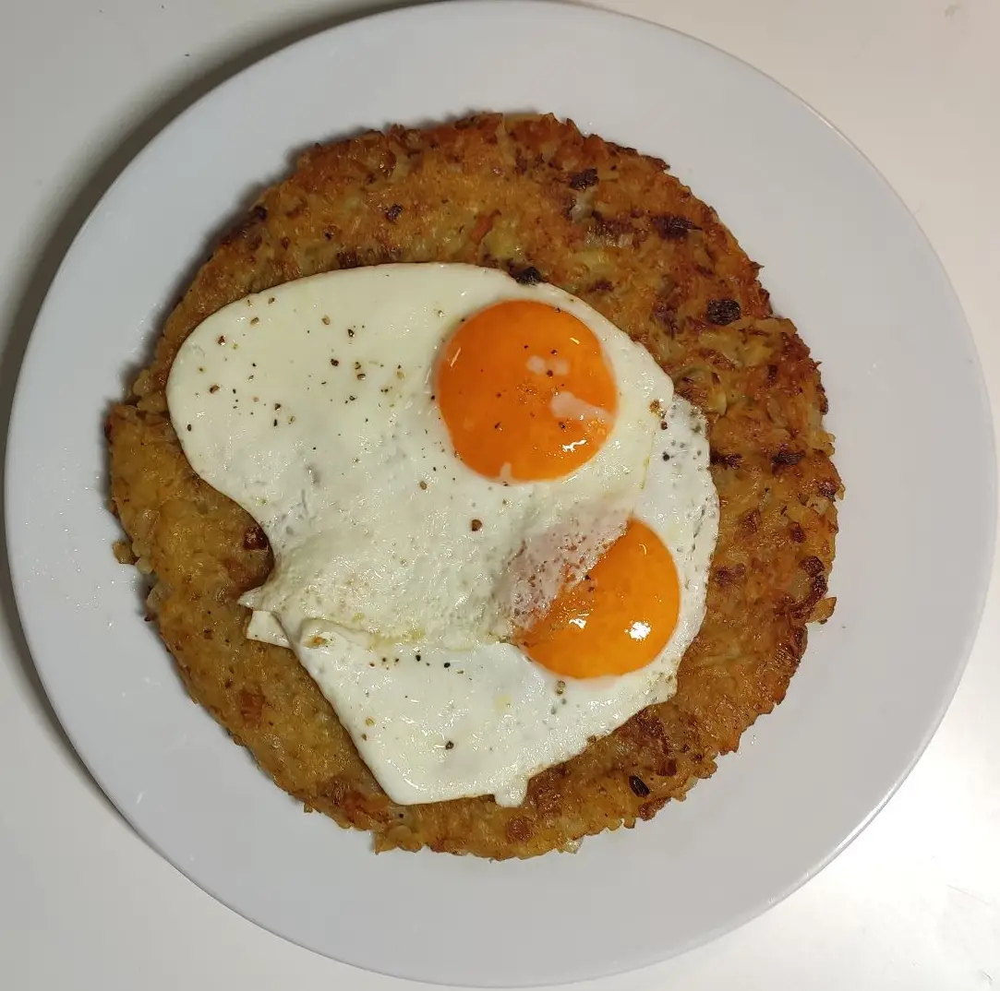

Rösti
 Used two serving sizes for this Rösti
This swiss classic works great together with fried eggs and steamed peas or spinach. Can be useful to get rid of leftover potatoes from the day before.
- ⏲️ Prep time: 20 min
- üç≥ Cook time: 20 min
- üçΩÔ∏è Servings: 4
Ingredients
- ~800g (~1.5lb) potatoes (firm/waxy)
- 2 carrots
- 500g (~1lb) peas or spinach
- 4 eggs
- 2 onions (medium size)
- butter
Directions
- If you don’t have cooked potatoes from the day before: Cook them and let them cool. It is important to use cold potatoes. You can also use raw potatoes. The cooking time will increase though.
- Shred your potatoes with a grater. The shreds should be quite large so don’t use your typical cheese shredder.
- Dice the first onion and mix together with potatoes. You can also add diced bacon if you want to. Add your seasonings here.
- Heat up some butter in a large pan. Add your mix to the pan on high heat. Let the mixture get warm for a few minutes under constant stirring.
- Reduce heat to medium-high. Form the R√∂sti into a round puck. It should fill out the whole pan. I recommend a thickness of around 1 - 1.5cm (~½") for a softer R√∂sti.
- Add some more butter flakes around the inside of the pan to get it under the Rösti.
- It can take quite a while for a nice crust to form. Check after roughly 5-10 minutes for browning.
- While the Rösti is cooking dice the other onion and the carrots. Steam everything in a pan with a bit of water. Use a lid to get the temperature up.
- Alternatively you can use fresh or creamed spinach.
- When you’re satisfied with the browning, flip the R√∂sti and set the heat to medium-low. A plate can be useful here to put on top of the R√∂sti in the pan.
- When the Rösti crispness is to your liking, remove from pan and fry two eggs. A runny yolk adds quite a bit to the potatoes.
- Top Rösti with eggs and serve with the peas or spinach.
Contributors
Recipe tags: swiss, potato, side, cheesefare